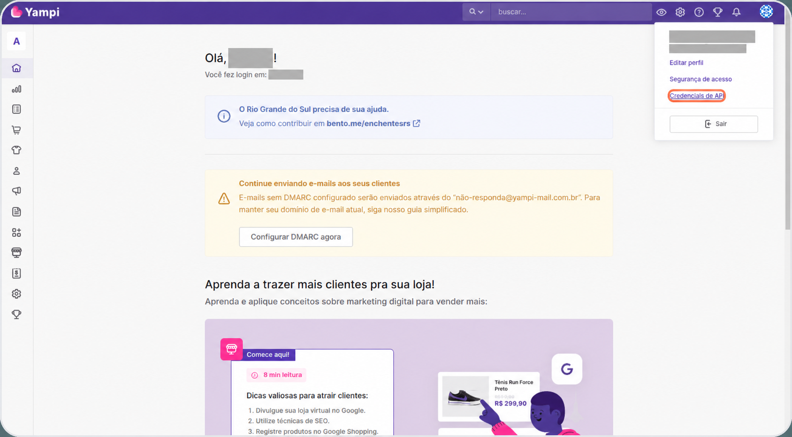
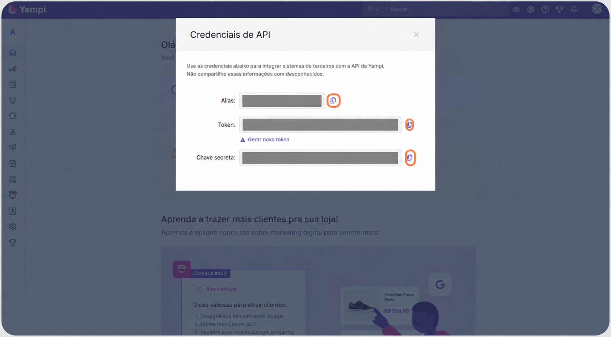
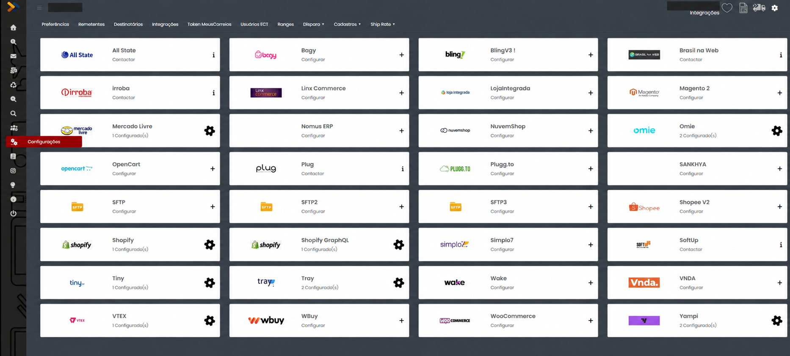
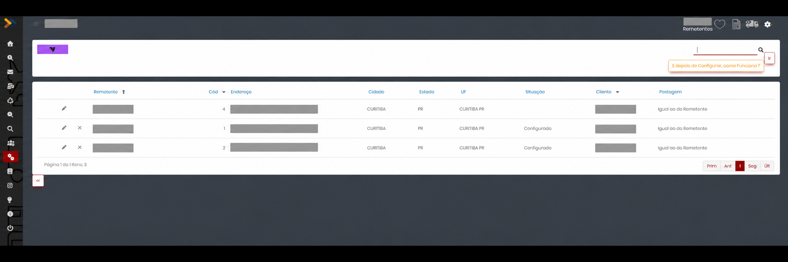
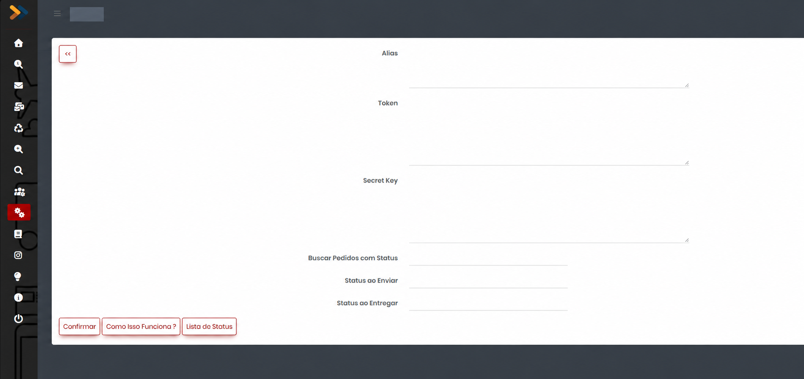
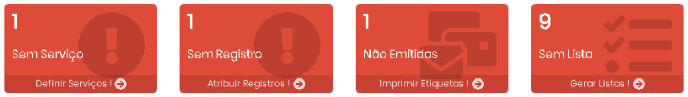

Use as credenciais da loja que será integrada. Ao alterar a senha do usuário na Yampi, as credenciais de API são renovadas; atualize o cadastro no MeusCorreios.
Integração Yampi com MeusCorreios
Aprenda a obter as credenciais da sua loja Yampi, configurar a integração no remetente do MeusCorreios e importar os pedidos para gerar pré-postagens, etiquetas e lista de postagem.
O processo começa na Yampi, com as credenciais da loja, e continua no MeusCorreios, com a seleção dos pedidos e a preparação da postagem.
Antes de começar
- Acesso ao painel da loja Yampi e às suas credenciais de API.
- Acesso ao módulo de Configurações e à Pré-Postagem do MeusCorreios.
- Remetente cadastrado com a integração Yampi disponível.
- Pedidos com dados do destinatário e endereço de entrega preenchidos.
- Serviços e faixa de etiquetas disponíveis para concluir a postagem.
Configuração na Yampi
Obtenha as credenciais da loja que terá os pedidos importados e confira quais pedidos estão liberados para expedição.
1. Obter as credenciais de API
- Acesse o painel da Yampi e entre na loja que será integrada.
- No canto superior direito, clique no ícone da loja ou do perfil.
- Abra Credenciais de API.
- Copie os valores de Alias, Token e Chave secreta para preencher a configuração no MeusCorreios.


| Credencial | Como utilizar |
|---|---|
| Alias | Identificador interno da loja. Copie o valor exibido; não o substitua pelo endereço do site. |
| Token | Credencial de acesso à API da Yampi. |
| Chave secreta | Credencial utilizada junto com o Token. Na documentação técnica, aparece como User Secret Key. |
2. Conferir os pedidos e os status
Na Yampi, acesse Vendas > Pedidos. Localize um pedido que deverá ser postado e confira seu número, data, situação do pagamento e endereço de entrega.
| Status na Yampi | Conferência para a expedição |
|---|---|
| Aguardando pagamento | Pagamento ainda pendente. |
| Pedido pré autorizado | A autorização não confirma que o pedido está pago. |
| Pagamento aprovado | Pagamento confirmado. |
| Produto em separação | Pedido em preparação na loja. |
| Faturado | Pedido com nota fiscal emitida. |
| Pronto para envio | Pedido preparado para envio. |
Configuração no MeusCorreios e Pré-Postagem
Cadastre as informações da Yampi no remetente correto. Depois, busque os pedidos e conclua as etapas da pré-postagem.
1. Configurar a integração do remetente
Abrir a integração Yampi
- No menu lateral do MeusCorreios, acesse Configurações.
- No menu superior, abra Integrações.
- Localize o cartão Yampi e abra a configuração pelo controle do cartão. Se já houver remetentes configurados, será exibido o ícone de engrenagem.

Selecionar o remetente
- Na lista de Remetentes, localize aquele que será utilizado nas postagens da loja Yampi.
- Clique no ícone de lápis na linha desse remetente para abrir os campos da integração.

Preencher as credenciais e os status
Preencha os campos conforme a tabela abaixo. As credenciais devem ser copiadas da loja Yampi que será vinculada ao remetente.
| Campo no MeusCorreios | Como preencher |
|---|---|
| Alias | Cole o Alias exibido em Credenciais de API na Yampi. |
| Token | Cole o Token obtido na mesma tela da Yampi. |
| Secret Key | Cole a Chave secreta da Yampi. Secret Key corresponde à Chave secreta; não repita aqui o Token. |
| Buscar Pedidos com Status | Informe o código do status que deverá ser considerado na busca de pedidos. Utilize Lista de Status para consultar os códigos disponíveis. |
| Status ao Enviar | Informe o código do status da Yampi que deverá ser utilizado na atualização do pedido como enviado. Consulte o código em Lista de Status. |
| Status ao Entregar | Informe o código do status da Yampi que deverá ser utilizado na atualização do pedido como entregue. Consulte o código em Lista de Status. |

- Revise o remetente, as três credenciais e os status informados.
- Clique em Confirmar para salvar a configuração.
- Volte à lista de remetentes e confira a situação Configurado.
A tela também dispõe do botão Como Isso Funciona ? para consultar as orientações da integração. Se a Yampi não estiver disponível em Configurações > Integrações, solicite ao suporte MeusCorreios a verificação da disponibilidade na sua versão.
2. Buscar pedidos e gerar a pré-postagem
Abrir a integração
- Acesse o módulo de Pré-Postagem do MeusCorreios.
- Crie um lote ou utilize um lote existente, conforme a sua operação.
- Clique em Integrações.
- Marque a integração Yampi do remetente configurado e clique em F6 Integrar os Marcados.
Consultar os pedidos
- Informe a data inicial para a busca e, se houver esse campo, a data final.
- Confira o remetente, o lote e os filtros disponíveis.
- Clique em Buscar Relação de Pedidos.
- Compare a relação retornada com os pedidos que deverão ser expedidos na Yampi.
Se um pedido não aparecer, confira a loja vinculada, o período da busca e o status utilizado no filtro. Não altere o status do pedido apenas para fazê-lo aparecer na integração.
Definir as opções de importação
Ajuste as opções disponíveis na tela antes de gerar a pré-postagem:
| Opção | O que conferir |
|---|---|
| Pedidos já incluídos no lote | Utilize a opção de desconsiderar pedidos já incluídos para reduzir o risco de importação repetida. |
| AR | Defina se as postagens deverão incluir Aviso de Recebimento. |
| Valor Declarado | Defina se o valor do pedido será considerado como Valor Declarado. |
| Declaração de Conteúdo | Quando aplicável, utilize os itens do pedido para preencher a declaração. |
| Itens em Observações | Defina se os itens deverão ser incluídos no campo Observações. |
| Sequência de etiquetas | Defina se a geração deverá seguir uma sequência de etiquetas. |
| Dicionário de Serviços | Confira o comportamento para serviços recebidos da plataforma que não tenham correspondência cadastrada. |
| Origens | Se disponível, confira o filtro de origens para pedidos de outros marketplaces. |
Marcar os pedidos e gerar a pré-postagem
- Marque somente os pedidos que serão postados.
- Use o quadrinho do cabeçalho para marcar ou desmarcar os pedidos de cada página. Confira a seleção ao navegar pelas páginas.
- Revise destinatário, endereço, serviço e opções de importação.
- Clique em Gerar Pré-Postagem dos Marcados.
- Ao retornar ao lote, confira os objetos criados antes de atribuir etiquetas e imprimir.
Concluir serviços, etiquetas e lista de postagem
Os indicadores em vermelho mostram as etapas que ainda precisam ser concluídas:
| Indicador | Próxima ação |
|---|---|
| Sem Serviço | Definir o serviço de postagem. Confira também o Dicionário de Serviços. |
| Sem Registro | Atribuir a etiqueta de rastreamento. Se necessário, confira a faixa e o estoque de etiquetas. |
| Não Emitidos | Imprimir as etiquetas dos objetos que já têm serviço e registro. |
| Sem Lista | Gerar a lista de postagem dos objetos com etiquetas emitidas. |

Depois de concluir a lista de postagem, encaminhe as encomendas e os documentos exigidos para a unidade dos Correios que atende sua empresa.
Referência de problemas
| Sintoma | O que verificar |
|---|---|
| A Yampi não aparece nas integrações | Confira Configurações > Integrações e solicite ao suporte a verificação da disponibilidade da Yampi na sua versão. |
| Falha de autenticação | Copie novamente Alias, Token e Chave secreta. Confira os campos, espaços extras e eventual troca de senha na Yampi. |
| A busca não retorna um pedido esperado | Compare o período, a loja e o filtro de status com os dados do pedido na Yampi. |
| O objeto ficou Sem Serviço | Cadastre a correspondência no Dicionário de Serviços ou defina o serviço no lote. |
| O objeto ficou Sem Registro | Confira se há etiquetas disponíveis para o serviço e atribua o registro. |
| O pedido foi importado mais de uma vez | Confira o número do pedido nos lotes e as opções de desconsiderar pedidos já incluídos antes de gerar nova pré-postagem. |
| O rastreio não aparece na Yampi | Confira se o retorno de rastreamento está disponível e habilitado na sua versão da integração. Encaminhe ao suporte o número do pedido e a etiqueta para verificar o retorno. |
Dúvidas frequentes
Preciso instalar um aplicativo na Yampi?
Este procedimento utiliza o cadastro de Alias, Token e Chave secreta. Se a sua versão do MeusCorreios apresentar um fluxo de autorização por aplicativo, siga o procedimento indicado por essa versão.
A integração também calcula o frete do checkout?
Este guia cobre a importação de pedidos para postagem. A configuração da cotação no checkout é um processo separado.
O rastreio e os status serão enviados automaticamente à Yampi?
O retorno depende dos recursos e das configurações disponíveis na integração MeusCorreios utilizada. Confira essa disponibilidade com o suporte antes de contar com a atualização automática.
Troquei a senha da Yampi e a integração parou. O que fazer?
Obtenha novamente as credenciais de API e atualize os campos no cadastro da integração.